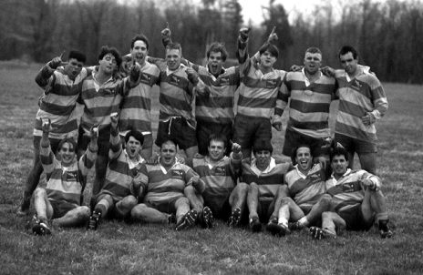
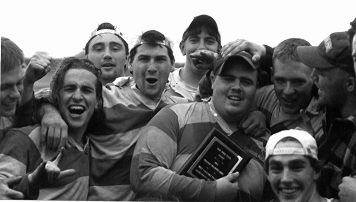
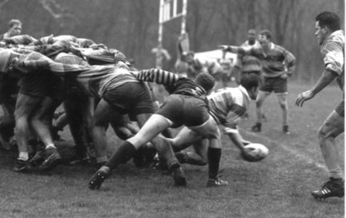

1995

154 points for and 0 against in games against Oneonta, Siena and Plattsburgh

Canisius vs Navy at Frick Park in Pittsburgh
Scrum half John Mendler gets the ball out under pressure from a set scrum
S=Scrimmage L=League Game E=Exhibition T=Tournament M=Mens P=Playoffs
Spring 1995
Date PF PA Type Opponent Venue 03-11 8 0 E UNC Charlotte Charlotte, NC 03-13 6 30 E Clemson Clemson, SC 03-25 31 15 E St Bonaventure Olean,NY 04-01 17 10 T Pittsburgh Frick Park Pittsburgh 04-01 0 17 T Navy Frick Park Pittsburgh 04-08 0 11 T Army Washington, DC 04-08 0 20 T Loyola Cherry Blossom Trny Washington,DC 04-08 0 20 T Purdue Cherry Blossom Trny Washington,DC 04-09 0 30 T Penn State Cherry Blossom Trny Washington,DC 04-22 40 0 M Niagara Wasps B Welland,ONT 04-29 28 0 T Oneonta NYS College Trny Windhover, NY 04-29 0 13 T Albany State NYS College Trny Windhover, NY Totals 130 166 Won 5 Lost 7
Go Back to Rugby Home Page